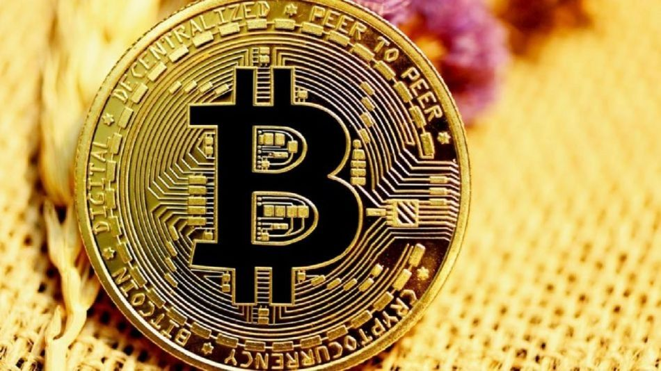
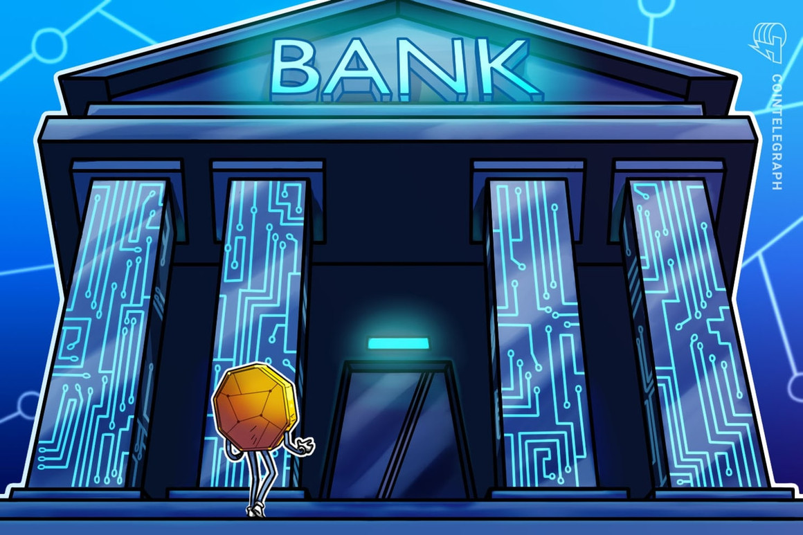
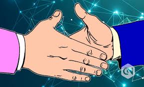
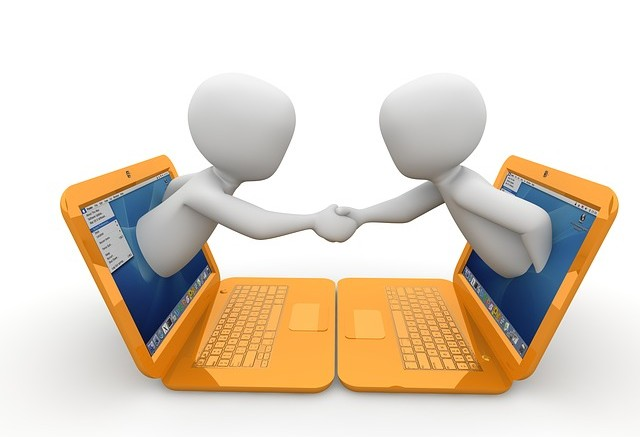
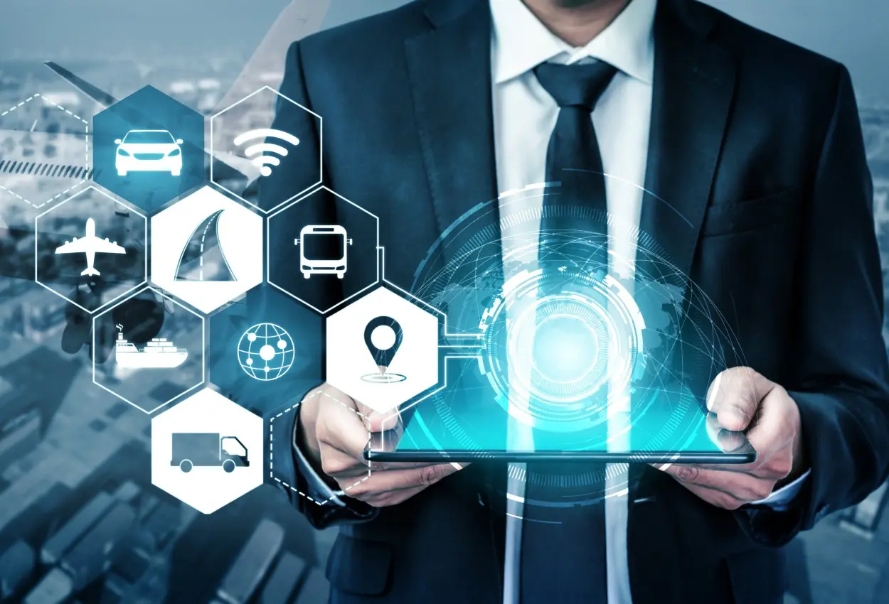
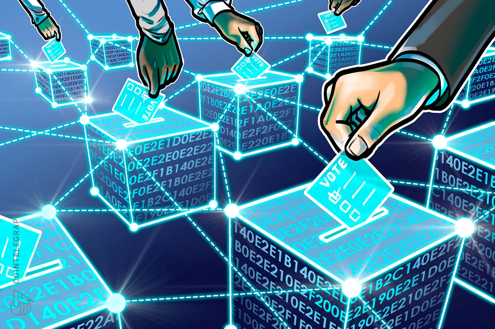

¿Para que sirve?
La tecnología blockchain se utiliza para muchos propósitos diferentes, desde la prestación de servicios financieros hasta la administración de sistemas de votación.
Aunque, blockchain podría utilizarse para almacenar cualquier tipo de información y para realizar verificaciones fidedignas de la identidad de una persona, los usos más frecuentes de las cadenas de bloques en la actualidad se encuentran en los ámbitos siguientes:
-Criptomonedas: El uso más común de blockchain hoy en día es almacenando y registrando datos relativos a transacciones de criptomonedas. Cuantas más personas usen las criptomonedas, más se generalizará la cadena de bloques.

-Bancario: Más allá de las criptomonedas, blockchain se está utilizando para procesar transacciones en moneda fiduciaria, como dólares y euros. Esto podría agilizar estas operaciones, ya que pueden verificarse más rápidamente y procesarse fuera del horario comercial normal.

-Transferencias de activos: Blockchain también se puede utilizar para registrar y transferir la propiedad de diferentes activos. Actualmente, esto es muy popular entre los activos digitales como NFT, una representación de la propiedad de arte y videos digitales. Sin embargo, blockchain también podría usarse para procesar la propiedad de activos de la vida real, como la escritura de bienes raíces y vehículos. La cadena de bloques permitiría verificar la identidad y la propiedad de una persona para transferir la escritura de propiedad sin presentar manualmente la documentación, que quedaría actualizada instantáneamente en blockchain.

-Contratos inteligentes: Otra innovación de blockchain son los contratos autoejecutables, comúnmente llamados "contratos inteligentes". Estos contratos digitales se promulgan automáticamente una vez que se cumplen las condiciones.

-Monitoreo de la cadena de suministro: Las cadenas de suministro involucran cantidades masivas de información, especialmente cuando los bienes van de una parte del mundo a otra. Almacenar esta información en blockchain facilitaría volver atrás y monitorear la cadena de suministro. Si quieres saber cómo evitar que te monitoricen por Internet, te recomendamos este artículo.

-Votación: Los expertos están buscando formas de aplicar blockchain para prevenir el fraude en la votación. En teoría, la votación en blockchain permitiría a las personas enviar votos que no podrían ser manipulados y eliminaría la necesidad de que las personas verifiquen la identidad o hagan el recuento de los votos. Si quieres saber por qué votas lo que votas, te recomendamos este artículo.
